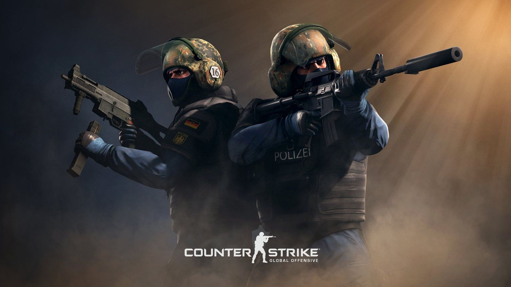
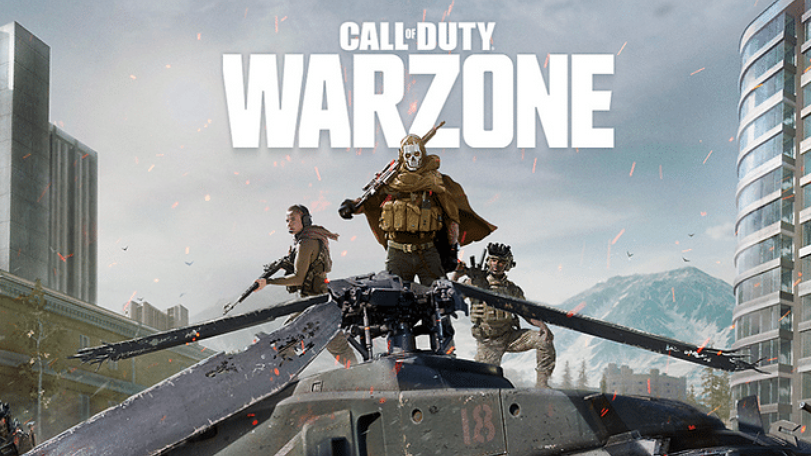

<!DOCTYPE html>
<html	lang="pt-br>
<head>
	<meta charset="UTF-8"/>
	<title>Os 3 melhores jogos de tiro</title>

	
	<link rel="shortcut icon" href="icone-jogos-de-tiro.png" type="image/x-icon">
	<link rel="stylesheet" href="style/jogos.css"/>
</head>
 
<div id="interface">
<header id="cabecalho">	
	<h1>Os 3 melhores jogos de tiro para PC em 2023!</h1>
</header>

	<p>Ação, adrenalina, reflexos e pontaria. Os jogos de tiro estão entre os gêneros mais movimentados da indústria de games. Com títulos de enorme peso e tradição, os shooters, seja em primeira ou terceira pessoa, continuam evoluindo para níveis cada vez mais surpreendentes. Abaixo você encontrará uma lista com os 3 melhores jogos de tiro para <b>PC</b> em 2023, englobando tanto títulos novos, velhos, leves, pesados, online e offline. Confira!</p>
<h2>1. Counter-Strike: Global Offensive</h2>

	
<nav id="link">
	<ul>
		<li><a href="https://store.steampowered.com/agecheck/app/730/" target="_blank"><b>Jogue Counter-Strike: Global Offensive grátis</b></a></li>
		<li><b>Ano de lançamento: 2012</b></li>
		<li><b>FPS tático</b></li>
		<li><b>Online</b></li>
	</ul>
</nav>
	<p>Convenhamos, um jogo que deu as caras em 1999 e que continua sendo um fenômeno até hoje, merece estar no início dessa lista. <br/><b>Counter-Strike: Global Offensive</b> (ou apenas <b>CS:GO</b>) é a versão mais recente da franquia (lançado em 2012) e recentemente registrou o maior número de jogadores online da sua história. O jogo só cresce com o tempo!</p>
	
	<p>CS:GO não mudou muita coisa em relação ao primeiro Counter-Strike lançado. Além dos gráficos bastante melhorados e pouquíssimas mecânicas novas, o jogo permanece extremamente parecido ao de anos atrás, especialmente os mapas no qual as partidas são jogadas.</p>
	
<table id="tabelacs">

	<caption>Requisitos de Sistema Para jogar <b>CS</b></caption>
		<tr><td class="ce">SO</td><td class="cd">Windows® 7/Vista/XP</td></tr> 
		<tr><td rowspan="2" class="ce">Processador</td><td class="cd">Intel® Core™ 2 Duo E6600</td></tr> 
		<tr><td class="cd">AMD Phenom™ X3 8750M</td></tr>
		<tr><td class="ce">Memória</td> <td class="cd">2 GB de RAM</td></tr>
		<tr><td rowspan="2" class="ce">Placa de vídeo</td><td class="cd">A placa de vídeo precisa ter 256 MB</td></tr>
		<tr><td class="cd">ser compatível com DirectX 9 e Pixel Shader 3.0</td></tr>
		<tr><td class="ce">DirectX</td> <td class="cd">Versão 9.0c</td></tr>
		<tr><td class="ce">Armazenamento</td> <td class="cd">15GB de espaço disponível</td></tr>
</table>
	
<h2>2. Call of Duty: Warzone</h2>
	
	
<nav id="link">			
	<ul>
		<li><a href="https://store.steampowered.com/agecheck/app/1962663/" target="_blank"><b>Jogue Call of Duty: Warzone grátis</b></a></li>
		<li><b>Ano de lançamento: 2020</b></li>
		<li><b>FPS/Battle Royale</b></li>
		<li><b>Online</b></li>
	</ul>
</nav>
	<p>Um do games mais populares do mundo e, consequentemente, um dos melhores jogos de tiro para PC disponíveis na atualidade.<br/> Em <b>Call of Duty: Warzone</b> Os players têm à disposição vários modos multiplayer, mas o mais prestigiado é o battle royale. Aqui, o negócio é ser o último a sobreviver, seja sozinho ou em squads de até quatro players. Quanto mais experiência você adquirir nas partidas, melhores suas armas se tornarão.	
	
<table id="tabelaCOD">
	<caption>Requisitos de Sistema Para jogar <b>Warzone</b></caption>
	
		<tr><td class="ce">SO</td><td class="cd">Windows® 10 64 Bit (atualização mais recente)</td></tr>
		<tr><td rowspan="2" class="ce">Processador</td><td class="cd">Intel® Core™ i3-6100/Core™ i5-2500K</td></tr>
		<tr><td class="cd">AMD Ryzen™ 3 1200</td></tr>
		<tr><td class="ce">Memória</td> <td class="cd">8 GB de RAM</td></tr>
		<tr><td rowspan="2" class="ce">Placa de vídeo</td> <td class="cd">NVIDIA® GeForce® GTX 960</td></tr>
		<tr><td class="cd">AMD Radeon™ RX 470</td></tr>
		<tr><td class="ce">DirectX</td> <td class="cd">Versão 12</td></tr>
		<tr><td class="ce">Rede</td> <td class="cd">Conexão de internet banda larga</td></tr>
		<tr><td class="ce">Armazenamento</td> <td class="cd">125 GB de espaço disponível</td></tr>
</table>
	
<h2>3. Fortnite</h2>
	
	
<nav id="link">
	<ul>
		<li><a href="https://www.fortnite.com/download" target="_blank"><b>Jogue Fortnite grátis</b></a></li>
		<li><b>Ano de lançamento: 2017</b></li>
		<li><b>Battle Royale</b></li>
		<li><b>Online</b></li>
	</ul>
</nav>	
	<p>O maior fenômeno da atualidade. <b>Fortnite</b> abalou o mundo dos battle royales de forma irreversível. Com sua pegada bem mais jovial, colorida e amigável a jogadores novos, <b>Fortnite</b> oferece um nível de entretenimento difícil de alcançar em outros jogos. São inúmeros os youtubers e streamers que migraram de outros jogos para explorar a base de fãs gigantesca que Fortnite criou.</p>
	
	<p>Para quem ainda não conhece Fortnite, o jogo se destaca bastante no estilo battle royale. Já que metade da jogabilidade gira em torno de construir estruturas nas quais você pode se defender ou conseguir vantagens de posicionamento em relação ao oponente. Se você está pensando que é simples, está enganado! Construir em nível avançado talvez seja a tarefa mais complexa do jogo.</p>
	
<table id="tabelaFORTNITE">
	<caption>Requisitos de Sistema Para jogar <b>Fortnite</b></caption>
	
		<tr><td class="ce">Sistema operacional</td><td class="cd">Windows 10 de 64 bits</td></tr>
		<tr><td class="ce">Processador</td><td class="cd">Core i3-3225 de 3,3 GHz</td></tr>
		<tr><td class="ce">Memória</td><td class="cd">8 GB de RAM</td></tr>
	
</table>
	
<footer id="rodape">
Copyright &copy;- 2023 - by Leonardo Soares
</footer>

	
</div>

<div id="link-direito">
<h2>Populares</h2>
<nav>

	<ul>
	<li><a href="https://www.ligadosgames.com/melhores-jogos-de-tiro-para-pc/">Os 27 melhores jogos de tiro para Pc</li>
	<li><a href="https://www.ligadosgames.com/melhores-jogos-de-tiro-para-android/"> Os 19 melhores jogos de tiro para Android</li>
	<li><a href="https://www.ligadosgames.com/melhores-jogos-gratis-para-pc/">Os 47 melhores jogos grátis para PC de 2023</li>
	<li><a href="file:///C:/Users/gsdam/Desktop/html%20leonardo%20curso/projeto-glass-html5/index.html">Google Glass</li>
	</ul>
	
</nav>
</div>

<nav id="menu">
	<ul id="home1">
		<li id="link1"><a href="3-melhores-jogos-de-tiro.html"/>Home</li>
		<li id="link2"><a href="3-jogos-fotos.html"/>Fotos</li>
		<li id="link3"><a href="3-jogos-videos.html"/>Videos</li>
	</ul>	
</nav>

</body>
</html> 